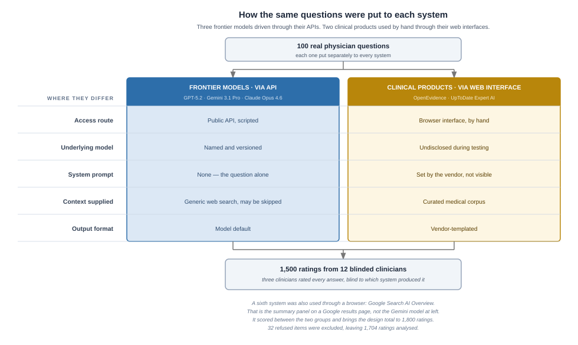

Nature Medicine Compared the Big Chat Models to OpenEvidence and UpToDate
Three frontier models outscored two specialized clinical tools on every benchmark it ran. Six weeks later, one vendor has demanded a retraction and the other disputes the measurement.
We read the paper in full, its published evaluation code line by line, both vendor announcements and the trial registry record.
Bursera Consulting · July 2026 · ~6,400 words
Opening
A June 2026 Brief Communication in Nature Medicine reported that three general-purpose frontier models outscored two specialized clinical AI tools on every benchmark it ran. Six weeks later the study has drawn a retraction demand from one of the named vendors, an on-the-record methodological rebuttal from the other, a vendor-backed counter-study, and a detailed technical argument among named clinicians and informaticians.
“General-purpose large language models outperform specialized clinical AI tools on medical benchmarks”
How the argument has been staged. The study itself ran six systems; this is the two camps the dispute formed around, not the full field — and the piece does not pick a winner.
1 · What the study measured
Vishwanath, Alyakin, Ghosh and 13 co-authors, with Eric Oermann as senior author, published “General-purpose large language models outperform specialized clinical AI tools on medical benchmarks” on 12 June 2026 in Nature Medicine — the Nature Portfolio’s clinical and translational title, a separate journal from Nature itself and one of the most cited in medicine [1] (DOI 10.1038/s41591-026-04431-5, Nat Med 2026;32(7):2405–2409) [3]. Sixteen authors, mostly NYU Langone Health, under NYU Langone IRB i23-00510. It runs five pages, in the journal’s Brief Communication format, with a companion Research Briefing in the same issue.
Two products were tested: OpenEvidence and Wolters Kluwer’s UpToDate Expert AI. Three frontier models: GPT-5.2, Gemini 3.1 Pro and Claude Opus 4.6. Google Search AI Overview was included as a sixth system, deliberately, because it is “routinely encountered by clinicians.” That is the summary panel at the top of an ordinary Google results page, not Google’s Gemini model, which is one of the three frontier systems above.
Two facts about the products matter for reading what follows, and both come from the vendors’ own documentation [20]. Both support multi-turn refinement, where a clinician narrows a question across several exchanges. And OpenEvidence accepts uploaded documents and, at Cedars-Sinai, reads the patient chart; UpToDate Expert AI does neither by design, and states that it is “not intended for use with personal data, including protected health information.” Fuller descriptions of both are in the appendix.
1.1 · The three benchmarks
Benchmark
n
What it measures
What it cannot show
MedQA
500
Exam recall. USMLE-style multiple choice, one right letter
Anything about reasoning, workflow, or use with a patient
HealthBench
500
Rubric alignment on single-turn free-text answers, graded by a panel of models
Whether a clinician would find the answer usable
Real clinical queries (RCQ)
100
Blinded clinician judgement of answers to real physician questions
Whether the question could have been asked better, or followed up
Both MedQA and HealthBench are public and widely used. MedQA has been a standard reference point for medical question answering for years, which is what makes the contamination argument later in this piece possible. HealthBench is newer and was built by OpenAI [2].
RCQ was built for this study. Its 100 de-identified questions came from physicians querying NYU Langone’s HIPAA-compliant general-purpose GPT instance — not from physicians using OpenEvidence or UpToDate. Each of the six systems was put each question once, and 12 clinicians rated the answers blind, three to an answer.
The results table reports one number per benchmark. RCQ was scored on four dimensions, plus two binary flags for harm and hallucination. The RCQ column is the aggregate mean across clinical correctness, completeness, safety and clarity.
System
MedQA accuracy %
HealthBench rubric score, 0–100
RCQ mean of 4 dimensions, 1–4
Gemini 3.1 Pro
97.4
79.3
3.62
GPT-5.2
94.2
88.0
3.54
Claude Opus 4.6
90.2
77.0
3.52
Google Search AI Overview
not run
not run
3.27
OpenEvidence
89.6
62.6
3.24
UpToDate Expert AI
88.4
61.3
3.17
No single system led everywhere: Gemini led MedQA and RCQ, GPT-5.2 led HealthBench.
On RCQ the six systems separated into two tiers. All nine significant pairwise differences fell between tiers rather than within them, after correction for multiple comparisons. Both clinical products landed in the same tier as the free, auto-generated Google result, and the study’s authors put that more sharply than a tier does: Google AI Overview “scored as well or better than OpenEvidence and UpToDate AI across all dimensions.” The whole spread from top to bottom is 0.45 points on a four-point scale.
The paper also reports the gap a second way, using a model that adjusts for how harshly each rater scored. On that measure the separation is larger, not smaller. Both readings are the study’s own, published in the same paper.
Two things qualify all of it. Thirty-two of the 600 model–question items were refusals and were dropped, so 1,704 of the 1,800 ratings were analysed, and the head-to-head comparisons used only the 74 questions every system answered. And the raters disagreed a good deal about individual answers, agreed strongly on whether an answer was acceptable, and ranked the six systems in much the same order. Vishwanath and colleagues report that low item-level agreement themselves and describe it as fair.
1.2 · Three findings in the details
One — UpToDate Expert AI declined to answer 19% of queries, against 1–3% for the frontier models.
Two — OpenEvidence scored lowest of all six systems on clarity, at a mean of 2.84. The study’s authors read that as “suggesting its weakness was communication, not knowledge.”
Three — no safety difference was detected between any of the six systems. On both binary flags, harmful content and hallucination, the difference was not statistically significant (p = 0.55 and p = 0.42). That is a failure to detect a difference rather than a demonstration that none exists. With 100 questions and events this rare the study was not powered to rule out safety differences, and its authors do not claim it was. What it measured as different was usefulness.
2 · How it was run, and what it could not settle
2.1 · What the study’s authors say about the limitations of their testing
They state plainly that they could not determine what the clinical products are built on: “As the architecture of proprietary clinical AI tools is inaccessible, it is impossible to definitively assess a mechanistic understanding for their underperformance against general-purpose models.”
They also flag, in their own words:
that the blinded RCQ evaluation is their primary evidence and HealthBench is supplementary;
possible training-data contamination may improve the MedQA and HealthBench scores of the frontier models as they “may have been exposed to MedQA or HealthBench during training”;
that HealthBench is OpenAI’s, so GPT-5.2’s score “may be influenced by potential benchmark–developer overlap”;
grading bias, since frontier models served as both evaluated systems and judges, mitigated by using a three-model panel;
that the result is “a snapshot of a rapidly evolving landscape rather than a permanent ordering of approaches.”
One claim sits alongside those caveats, and it is the one the critics have concentrated on: that “scale, alignment and cross-domain reasoning may outweigh domain-specific tuning as determinants of medical competency for particular tasks,” with implications for “procurement, reimbursement and regulatory oversight.”
2.2 · How each system was tested
The frontier models were driven through public APIs, at fixed settings and with web search switched on. The two clinical products were used by hand through their browser interfaces, because, as the paper states, they lack public application programming interfaces.

How the same questions were put to each system. The two routes differed in five conditions; the figure names them.
MedQA and HealthBench ran separately, on 500 questions each, across five systems rather than six, and were graded automatically rather than by clinicians.
2.3 · What the study’s published code shows
The study’s evaluation code is published under AGPL-3.0 [4]. The pipeline drives the three frontier models only: OpenEvidence, UpToDate Expert AI and Google AI Overview are registered in the code as manual-import-only, their answers were collected by hand and read in from files, and the generation code raises an error if asked to query them. The facts below describe how the frontier models were run.
A full read of the roughly 2,500-line pipeline adds three facts the paper does not state.
No system prompt, persona or clinical framing was sent to any of the three frontier models. Each generation call carried the raw benchmark question and nothing else.
No PubMed, literature, retrieval or citation-checking integration of any kind is present.
No medical model variants or health-specific API features were used.
3 · What the arguments are about
The dispute began on publication day and has not resolved. Three separate arguments are running at once, and they are often confused for each other. A dated account of how it unfolded is in the appendix.
3.1 · The research doesn’t support the headline
This started within hours, among researchers and clinicians who do not sell either product, though several work in clinical AI. Six distinct objections are in play. They are not all compatible with each other, nobody has adjudicated between them, and this piece does not either.
The frontier models and the clinical products were not accessed the same way. Abel Torres-Espin, on publication day [5]: the clinical tools were queried through their interfaces while the frontier models went through APIs, and “because the Clinical AI is queried through the interface, there are many extra layers that direct API calls don’t have (e.g., hidden prompts).” He also noted that search was enabled on the frontier side while both public benchmarks sit online. The study’s authors state the same limitation themselves.
The three benchmarks do not test what the title claims. David Talby, CTO of John Snow Labs, published the fullest version on 12 July [6]. “The study is fine. The methods are reasonable and the statistics are careful. The problem is the title. It states a general conclusion that the study did not test and does not support.” All three benchmarks test one capability, in his words “answering a single-turn, general medical question, in isolation, with no patient record attached.” Real clinical work, in his list, is “summarizing a chart, drafting a discharge instruction, extracting a tumor stage from a pathology report, reconciling a medication list, catching an error in a note, turning a clinician’s question into a database query.” Talby competes in clinical AI and markets his own benchmark results in the same piece.
The differences are too small to carry the conclusion. Torres-Espin again, and he is the only commentator to have made this point: the RCQ scale is ordinal, 1 to 4, and “the difference between all models is less than 0.5 point in such scale.” Sunita Mohanty reads the numbers as the products tying the frontier models on knowledge, harm and hallucination and losing on readability, which she calls “a UX observation, not a verdict on clinical usefulness” [14].
UpToDate Expert AI’s refusals may be correct behaviour rather than a failure. Max Topaz took its 19% refusal rate and read it as a safety feature [15]. Wolters Kluwer’s chief medical officer makes the stronger version of the same argument, in §2.2.
The paper could not identify which models the products run on. Its authors say so, and Sergei Polevikov pressed the point publicly [16].
Peer review had already caught some of it. Gilles Frydman read the published peer-review file and found reviewers had flagged the single-judge grading, which became a three-model panel, and a missing safety analysis, which was added [17].
Sources 14 through 17 were retrieved agentically rather than read at the post; the URLs and dates are held and the wording is as retrieved.
4 · Where the parties stand
4.1 · The vendors’ answer — two companies, two different responses
The retraction letter and the on-record responses in this section come from Giles Bruce’s reporting for Becker’s Hospital Review [7]. The letter itself has not been published.
OpenEvidence disputed the paper itself. The product is free and ad-funded, valued at around $12B, and marketed on how many physicians use it [20]. It responded publicly on 13 June alleging methodological flaws and an undisclosed conflict of interest, and on 15 June wrote to Nature Medicine demanding retraction, a public apology, and an independent review [7]. Its stated ground is contamination: MedQA and HealthBench are public and may sit in the frontier models’ training data. Peer reviewers raised the same concern during review, and the study’s authors state it as a limitation. The company went on to back a counter-study, launch a product, and publicise a second study measuring which tool physicians choose. Both are compared in the appendix.
The company’s account of the conflict is sharper than the disclosure question. In its 13 June thread it said the study’s authors run a competing in-house medical AI at their hospital, asked OpenEvidence for API access to power it including rights to build a competing product, and were declined [18]. Farah Deshmukh, a physician writing on 15 June, reported the same three objections independently — contamination, a rubric she says favoured the general models’ communication style, and the API-access allegation [21]. It remains OpenEvidence’s characterisation and it is unadjudicated. On the disclosure itself, the paper carries a competing-interests declaration that includes consulting for Google by the senior author, and Google’s Gemini led two of the three benchmarks, so “undisclosed” is contested rather than established. That declaration has not been read in the primary back matter for this piece; it is reported by Talby, who read the paper, and reflected in the published record.
Wolters Kluwer disputed the measurement. UpToDate is a subscription business, roughly 80% enterprise, sold on editorial rigour [20]. Peter Bonis, chief medical officer of Wolters Kluwer Health, told Becker’s the study “confused clinical quality and complete-sounding answers,” and on the refusal rate argued that the paper counted declining to answer as a deficit without establishing whether those refusals were appropriate. In clinical decision support, he said, declining an underspecified or risky prompt “may be the safer behavior.” No retraction demand, no counter-study — one statement from its chief medical officer, one LinkedIn post, and a validation framework the company had already published.
4.2 · The study’s authors — they have not moved
Eric Oermann, the senior and corresponding author, told Becker’s on 16 June that the team stands behind the work: “We continue to stand by our study and its results.” [7] Their substantive answer to the contamination charge is in the paper itself. They designate the blinded clinician evaluation as their primary evidence precisely because its 100 questions were written for the study and appear in no public benchmark, so contamination cannot reach them — and the frontier models led there too.
That 16 June quote is the last public statement from the study’s team that this piece has found. Searches on Vishwanath, Oermann and each of the other 14 co-authors surfaced no post-publication interview, podcast or further post, and neither vendor has filed the Matters Arising the journal has pointed them toward. Absence of a later statement is not proof of silence, but it is what the record shows.
4.3 · Nature Medicine’s position — use the process
Chief editor João Monteiro declined to address the retraction demand directly, said the journal “welcomes scientific debate,” and pointed to its formal Matters Arising process [8], where concerns are assessed editorially alongside a response from the original authors. As of the date of this piece, no Matters Arising submission from either vendor has been published.
Final take
Appendix
A · Sources
The main documents behind this piece. Not a full bibliography — these are the ones a reader would want to check.
The study and its materials
Nature Medicine journal metrics, 2026 — impact factor 52.5, against 56.1 for Nature. Aggregator-reported.
MedQA (Jin et al., USMLE-style question set) and HealthBench (OpenAI, 2025) — the two public benchmarks used.
Vishwanath K, Alyakin A, Ghosh M, et al. “General-purpose large language models outperform specialized clinical AI tools on medical benchmarks.” Nat Med 2026;32(7):2405–2409. doi.org/10.1038/s41591-026-04431-5. Read in full via PubMed Central; the back matter, including the competing-interests declaration, is not in the PMC text and has not been read. A companion Research Briefing appears in the same issue at 2364–2365 (10.1038/s41591-026-04457-9).
Abel Torres-Espin, LinkedIn, 12 June 2026 — the post. Retrieved agentically; not read at the post.
David Talby, “When the Title Outruns the Study,” 12 July 2026 — talby.com. Read in full.
Giles Bruce, “ChatGPT, Gemini, Claude outperform clinical AI tools: Study,” Becker’s Hospital Review, 16 June 2026 — the report. Read in full. Source for the retraction letter and for the on-record comments from Oermann, Bonis and Monteiro.
“Wolters Kluwer and OpenAI expand enterprise AI collaboration,” 3 June 2026 — Wolters Kluwer newsroom. Read in full.
The other studies cited in the argument
PRECISE — “Physician Response Evaluation With Contextual Insights vs. Standard Engines,” Montefiore Medical Center with Harvard Beth Israel Deaconess, NCT07037940. Registry record read in full: status Completed, 27 participants, completed 30 December 2025, six blinded raters, no results posted. No publication exists.
Goh E, Gallo RJ, Strong E, et al. “GPT-4 assistance for improvement of physician performance on patient care tasks: a randomized controlled trial.” Nat Med 2025;31(4):1233–1238. doi.org/10.1038/s41591-024-03456-y. Cited, not read for this piece.
“Real-POCQi” — preprint, 27 June 2026, arXiv:2606.28960. 620 queries drawn from OpenEvidence’s platform, 149 physicians across 36 states. Backed by OpenEvidence. Covered by STAT News, 9 July 2026. Not read for this piece; figures are second-hand.
NOHARM — ARISE clinical AI research network, led by Stanford and Harvard physicians, July 2026. Reached the public through an OpenEvidence press release. Figures are vendor-reported. Not read for this piece.
The commentators quoted in §3.1
All four were retrieved agentically. The URLs and dates are held; none was read at the post.
Sergei Polevikov, “OpenEvidence Goes Hippocratic AI,” AI Health Uncut, 23 June 2026.
Gilles Frydman, LinkedIn, 14 June 2026, summarising the paper’s published peer-review file.
Company statements
OpenEvidence (@EvidenceOpen), public thread, 13 June 2026, carrying the conflict-of-interest allegation. Reached this piece through a secondary aggregation quoted by Polevikov [16], not from the company’s own feed; independently reported by Deshmukh [21]. The company’s characterisation, unadjudicated.
“Wolters Kluwer accelerates AI leadership with AI Center of Excellence and ‘FAB’ platform,” 7 April 2026 — Wolters Kluwer newsroom. Read in full. Source for “model agnostic,” “designed for model pluralism,” and “the right model for the right task,” and for the statement that FAB powers UpToDate Expert AI.
Product descriptions, feature lists, EHR integrations, adoption and valuation figures for both products — each vendor’s own documentation, hospital and university library guides, and trade press. Vendor-sourced or engine-collected; not independently verified.
Read after the first draft was written
Farah Deshmukh MD MPH, “Journal Club: That Nature Medicine Paper on ChatGPT vs. OpenEvidence,” Algorithms & Adipose, 15 June 2026. Read in full. A physician’s walk through the same paper three days after publication, carrying OpenEvidence’s three objections independently of the aggregation route, and reaching the operator-skill point before this piece did.
B · The other studies in play
Four other studies get cited in this argument, by one side or another.
Study
What it measured
Who ran it
What it found
Read for this piece
Real-POCQi — preprint, 27 June 2026 [12]
Answer quality on 620 real queries drawn from OpenEvidence’s own platform, graded by 149 physicians across 36 states
Backed by OpenEvidence
OpenEvidence ahead on all five dimensions measured, by 25–39 percentage points
No
NOHARM — July 2026 [13]
Which tool physicians reach for, across 101 board-certified US physicians, alongside a large annotation exercise
ARISE, a clinical AI research network led by Stanford and Harvard physicians; publicised by OpenEvidence
Physicians chose OpenEvidence in 22.3% of responses, more than every other AI tool combined
No
PRECISE — completed 30 December 2025 [10]
Whether physicians reason better with OpenEvidence or with ChatGPT, on real de-identified cases, six blinded raters
Montefiore Medical Center, with Harvard Beth Israel Deaconess
Unknown. No results posted
Registry record, read in full
Goh et al. — Nature Medicine, 2025 [11]
Whether GPT-4 assistance improves physician performance on patient-care tasks
Academic, multi-site
Assistance improved performance
Citation only
Real-POCQi and NOHARM are not the same study. One asks whether OpenEvidence’s answers are better. The other asks which tool physicians pick. A tool can win the second and lose the first. Both reached the public through OpenEvidence, and both figures above come from vendor or vendor-promoted material.
PRECISE is the only one of the four that puts a physician to work on a real case with one tool against a physician working it with the other. It enrolled 27 participants across Montefiore and Harvard Beth Israel Deaconess, ran on GPT-4, completed on 30 December 2025, and has posted no results.
C · The two clinical products
The two products take different approaches to serving physicians. The descriptions below come from each vendor’s own documentation and from hospital and university library guides [20].
OpenEvidence is a platform, not an ask bar. Alongside the ask bar it ships ambient visit documentation, a per-patient record area, document upload, coding suggestions, clinical-trial matching, a longer-running agent mode for multi-step questions, and a voice interface. It is embedded in Epic at Sutter Health, Mount Sinai and Cedars-Sinai, and at Cedars-Sinai it reads the chart, linking literature to a patient’s recorded procedures, comorbidities, medications and allergies.
UpToDate Expert AI is scoped more narrowly. It is an optional feature inside UpToDate, a subscription clinical reference that the vendor says is used by more than three million clinicians and is written and maintained by over 7,600 physician contributors and editors. Expert AI is a button beside the standard UpToDate search box, running conversational queries against the whole UpToDate corpus and nothing else, not the open internet. It does not read the chart, and says so: it is “not intended for use with personal data, including protected health information.” Instead it prompts the clinician to type the missing context. It supports follow-up questions, with a worked example in the vendor’s own guide.
Neither company has published the version identity of the product that was tested.
D · How the dispute unfolded
Date
What happened
Sept 2025 – Feb 2026
The study’s access window. OpenEvidence queried September 2025 and February 2026; UpToDate Expert AI November 2025 and February 2026; the three frontier models February 2026
30 Dec 2025
PRECISE, the one head-to-head trial of physicians using either tool, completes at Montefiore and Harvard Beth Israel Deaconess. No results have been posted [10]
7 Apr 2026
Wolters Kluwer describes FAB, the “model agnostic” platform it says powers UpToDate Expert AI [19]
3 Jun 2026
Wolters Kluwer announces it has moved UpToDate Expert AI onto OpenAI’s latest models — nine days before the paper, and after the study’s access window had closed [9]
12 Jun 2026
The paper publishes. Abel Torres-Espin posts the first detailed methodological objection the same day [5]
13 Jun 2026
OpenEvidence responds publicly, alleging methodological flaws and an undisclosed conflict of interest [18]
14 Jun 2026
Gilles Frydman posts a reading of the published peer-review file [17]
15 Jun 2026
OpenEvidence writes to Nature Medicine demanding retraction, an apology and an independent review [7]. Farah Deshmukh publishes an independent walk-through the same day [21]
15 Jun 2026
Max Topaz reads UpToDate Expert AI’s 19% refusal rate as a safety feature [15]
16 Jun 2026
Becker’s reports the retraction demand, and carries Oermann, Bonis and Monteiro on the record [7]
17 Jun 2026
Sunita Mohanty reads the scores as a tie on knowledge and a loss on readability [14]
23 Jun 2026
Sergei Polevikov presses on the undisclosed base models [16]
27 Jun 2026
Real-POCQi appears as a preprint, backed by OpenEvidence, reporting the opposite result [12]
12 Jul 2026
David Talby publishes the fullest version of the methodological critique [6]
20 Jul 2026
NOHARM reaches the public through an OpenEvidence press release [13]
As of this piece
No Matters Arising submission from either vendor has been published
E · Terms
Benchmark. A fixed set of questions with agreed answers or grading rules, used to compare systems. Its value depends entirely on whether the questions resemble the work.
MedQA. A public set of USMLE-style multiple-choice questions. Public means the questions may sit in a model’s training data.
HealthBench. A newer public set of free-text prompts graded against rubrics, built by OpenAI.
Contamination. When a benchmark’s questions appear in a model’s training data, so a high score reflects memory rather than reasoning. Hard to detect and hard to rule out.
Retrieval-augmented generation. Answering by first searching a document collection and then writing from what was found, rather than from the model alone. It is the proposition both clinical products sell.
Matters Arising.Nature’s formal channel for challenging a paper it has published. A submission is assessed editorially and, if it runs, appears alongside a reply from the original authors. It is slower than a public dispute and it is the route the journal has pointed both vendors toward.
Ordinal scale. A rating scale, here 1 to 4, where the order is meaningful but the distances between points are not. It is why a 0.45-point gap on a four-point scale is harder to interpret than a 0.45-point gap on a measured quantity.
F · What would help clear things up
Six things the public record does not settle. Answering them would not decide the argument, but each would remove a reason the argument keeps circling.
Open question
Who holds the answer
What answering it would change
Which access run supplies the reported results
The study’s authors
Both clinical products were queried twice, months apart. The paper does not say which run the reported numbers come from, or whether the runs were combined. The published code cannot answer it either — it stamps when a file was imported, not when the tool was queried
Which web search the frontier models were given, and what it could see
The study’s authors
Search was switched on, but the paper never says which tool or what it could reach. The code shows a generic, un-scoped web search with no allowed- or blocked-domain list. If it could reach the benchmark questions, that alone could explain part of the gap
Whether UpToDate Expert AI’s 19% refusals were appropriate
The study’s authors, or anyone who re-reads those responses
Turns the clearest product difference in the study either into a design choice working as intended, or into a real deficit. Wolters Kluwer has argued the first; nobody has published the re-read
Which version of UpToDate Expert AI was evaluated
Wolters Kluwer
The product moved to newer models nine days before publication. Without version identity, nobody can say how much of what was tested still ships
What model OpenEvidence runs on
OpenEvidence
Every statement on this in the public argument is inference, including the ones above
What the counter-study’s methods bear
Reading the Real-POCQi preprint
It reports the opposite result from the same kind of evidence, and its queries came from OpenEvidence’s own platform — the mirror image of this study’s question source
Two further gaps are nobody’s to answer. The paper’s Extended Data was not retrieved for this piece, and its competing-interests declaration sits in back matter that the PubMed Central full text does not carry.
Research Provenance
Provenance
Owner. Hugh McCutchen, Bursera.
Contributors. Hugh McCutchen, direction and editing across twenty-two versions. Claude Opus 5, drafting, verification and adjudication. Claude Sonnet and GPT-5.4 running in Perplexity, as blind reviewers who never saw each other’s returns.
How it began. Written from scratch. The first version was drafted on a factual base assembled before any prose existed: the Nature Medicine paper read in full through PubMed Central, its published evaluation pipeline read line by line, and five AI-engine research dossiers landed verbatim and adjudicated against each other. Two of those dossiers carried the public argument, one carried the vendor platform picture, one the product feature picture, and one the surrounding literature, which was largely deferred.
Type of writing. Inquiry record. It reports a dispute and states where Bursera lands, in marked panels, without resolving the dispute.
Process. Mixed — exploratory where the record was thin, execution once the facts were settled.
Tools. Claude Opus 5 · Claude Sonnet · GPT-5.4 in Perplexity · Perplexity Deep Research and Computer mode · Gemini Deep Research · PubMed and PubMed Central · ClinicalTrials.gov.
Validation. Eight passes. Four were run by reviewers outside the drafting — two blind red-team rounds, a form study, and a separate check of the chronology.
Pass
When
Who ran it
What it found
Primary extraction
Before drafting
Claude Opus 5
The paper read in full through PubMed Central. Every number in this piece traces to a sentence in it. The back matter is not in the PMC text and is still unread
Code audit
Before drafting
Claude Sonnet subagent, 2,494 lines read in full
Three facts the paper does not state. Also that the two clinical products never enter the evaluation code at all — they are manual-import-only, which scopes every code claim in §1.5
Source verification
Second session
Claude Opus 5, against primaries
Confirmed the Becker’s reporting and the Talby piece verbatim. Falsified one of this project’s own earlier findings — an internal document had recorded that Wolters Kluwer said nothing, when its chief medical officer had responded on the record in an article the same document already cited
Blind red team, round one
Second session
Claude Sonnet and GPT-5.4 in Perplexity, separate threads, neither shown the other’s return
One blocking factual error. And, written near-identically by both without contact, the structural finding that the piece planted its conclusion in the opening and hedged it several pages later
Blind red team, round two
Third session
The same two engines, on a prompt rebuilt to demand a retrieval declaration up front
That the paper’s second and harsher measure of the gap had been sitting in this project’s own verified extraction and had never reached the draft. And that two of three phrases quoted from one vendor release actually come from a different release by the same company
Form study
Third session
Claude Sonnet, eight published articles opened
No published piece was found that combines study explanation, dispute reportage, an adjacent-studies survey and marked opinion. That is why this one orients its reader in the opening rather than assuming a familiar shape
Chronology validation
Third session
Claude Sonnet subagent, 13 rows against the evidence base
Five defects, all corrected. The largest: an interval stated as four months that the evidence supports only as three to four, because the access month is recorded without a day
Mechanical sweep
Before handoff
Scripted
Citation integrity — all twenty-one sources both used and defined, none orphaned. Register, banned-pattern and whitespace checks
Two of the red team’s own blocking calls were rejected, and rejecting them mattered as much as accepting the rest: one rested on a trial status that the registry record contradicts, and one on arithmetic that reconciles once refusals are counted as items rather than as ratings. A reviewer that cannot open a source produces findings about its own session rather than about the work, which is why round two demanded a retrieval declaration before any finding.
What was not checked, and should be. The figure has never been reviewed outside Bursera. All three red-team passes ran on the text alone, so no independent reviewer has opened it; its three known defects were found in-house and there may be more. The paper’s Extended Data was never retrieved. Its competing-interests declaration has not been read in the primary. Three of the four other studies in the appendix were not read. Four commentators’ posts were retrieved by an automated pass and never opened at source. Each of those is labelled where it appears.
Sources. Twenty-one, each labelled in the source list with whether it was read in full, retrieved by an automated pass and not read at the post, or supplied by a vendor and not independently verified. The study, its code, both vendor announcements, the Becker’s reporting, the Talby piece, the trial registry record and one physician’s journal-club post were read in full. Four commentators’ posts were retrieved but not opened at source. The product descriptions, adoption and valuation figures are vendor-sourced and unverified, and say so.
Depth and confidence. Deep on the study and its code, where every number traces to a primary document. Graded on the public argument, where four of the six commentators reach this piece second-hand. Weakest on the four other studies in the appendix, three of which were not read. Where the evidence runs out, the piece says so rather than closing the gap.
Level of work. Extensive. Twenty-four versions across three working sessions, with Hugh McCutchen reviewing and marking up every one.
Full history and audit trail available on request.
Release v1.0 — final, approved for release 30 July 2026.
See the full audit trail →Every version from first draft to publication — what changed, who ran it, what was found and corrected, and what remains unverified.